1. Import and filter
Import the key components from Symportal using
sp_import() and bind to a single object
spd
library(tidyverse)
library(ggplot2)
library(readxl)
library(kableExtra)
library(symbayes)
DATA_DIR <- "~/symbayes/datasets/20230120T102936_turb18_remote"
SP_PREFIX <- "241_20230127T162451_DBV_20230128T005644"
spd <- import(
seqs_abund = file.path(DATA_DIR, "post_med_seqs",
paste0(SP_PREFIX, ".seqs.absolute.abund_only.txt")),
profs_abund = file.path(DATA_DIR, "its2_type_profiles",
paste0(SP_PREFIX, ".profiles.absolute.abund_only.txt")),
profs_meta = file.path(DATA_DIR, "its2_type_profiles",
paste0(SP_PREFIX, ".profiles.meta_only.txt")),
seqs_meta = file.path(DATA_DIR, "post_med_seqs",
paste0(SP_PREFIX, ".seqs.absolute.meta_only.txt")),
sample_sheet = file.path(DATA_DIR, "sample_sheet.xlsx"),
colour_dict = file.path(DATA_DIR, "html", "color_dict_post_med.json"),
prof_colour_dict = file.path(DATA_DIR, "html", "prof_color_dict.json")
)then (if needed) filter sequences to a minimum number of reads
(min_reads), which acts identical to SymPortal’s
200-sequence cutoff.
spd <- filter_samples(spd, min_reads = 100, min_prev = 2)
spd <- readRDS("~/symbayes/datasets/spd.rds")i) Fit DMM model:
Process: - Fits DMM for k = 1:max_k groups - Selects the number of components by the Laplace approximation and BIC - Extracts posterior membership, - Maps each sample’s dominant profile and clade.
spd <- fit_dmm(spd) ii) Fit LDA model:
LDA answers what each sample is made of. Unlike DMM, membership is fractional, so within-sample admixture is represented directly. This vignette covers every LDA-specific function.
With k = NULL (the default), fit_lda()
searches k_range and selects the largest K with no
redundant topic pairs (cosine
< redundant_thresh). This resists the shadow topics that
perplexity-optimal K produces.
spd <- fit_lda(spd)iii) fit HDP model:
Hierarchical Dirichlet processes (HDPs) extend the mixture-model framework by allowing the number of latent components to be inferred from the data rather than fixed in advance. Like LDA, HDPs allow samples to have fractional membership across multiple latent community profiles, but they are threshold-free in the sense that the model can adapt the number of components as needed. This makes HDPs useful when both the number of community types and the composition of each sample are uncertain. In practice, HDPs can reveal fine-scale structure, but they may also infer fewer or more components depending on how much shared structure exists across samples.
Fit the hdp model:
spd <- fit_hdp(spd) # flat, threshold-freesave models:
saveRDS(spd, "~/symbayes/datasets/spd.rds")
spd <- readRDS("~/symbayes/datasets/spd.rds")2. Dirichlet-multinomial mixture model
DMMs treat each sample as belonging to one discrete community type. The model assumes that samples are generated from one of K underlying multinomial profiles, where each profile represents a characteristic assemblage or community state. In this sense, DMMs are useful when the goal is to classify samples into relatively clear groups, such as dominant Symbiodiniaceae community types. Assignment is usually hard, meaning each sample is allocated to a single best-fitting component, although assignment uncertainty can still be examined. The number of components, K, is typically selected by comparing models using criteria such as the Laplace approximation.
fit_dmm() evaluates k = 1:max_k and selects
K by the Laplace approximation to the model evidence. Inspect the
criteria:
dmm_plot_selection(spd)
spd$dmm$meta$model_fit # the Laplace / AIC / BIC table
#> K Laplace AIC BIC
#> 1 1 21566.51 21864.44 22256.63
#> 2 2 20171.35 21152.03 21937.88
#> 3 3 19712.10 21421.32 22600.82
#> 4 4 19654.26 22003.70 23576.86
#> 5 5 19524.29 22599.95 24566.78
#> 6 6 19871.30 23531.40 25891.89
#> 7 7 20134.00 24382.39 27136.54
#> 8 8 20185.50 25203.44 28351.24
#> 9 9 20703.28 26134.21 29675.67
#> 10 10 20946.06 27093.76 31028.88Visualising the dmm outputs:
ii) Plot DMM model:
PCOA
plot_pcoa(spd, model = "dmm")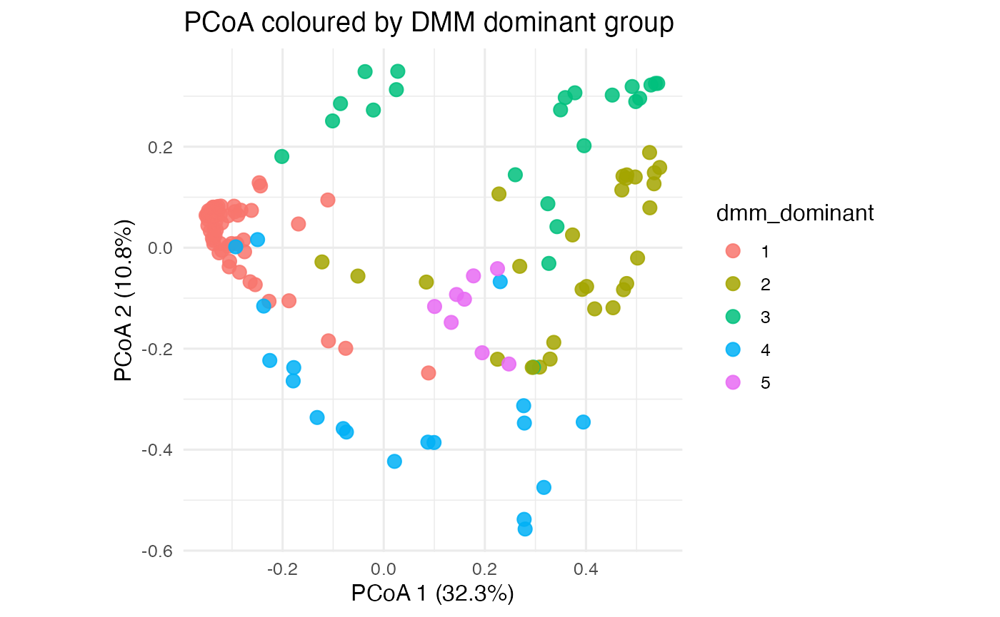
### Barplot
plot_barplot(spd, model = "dmm")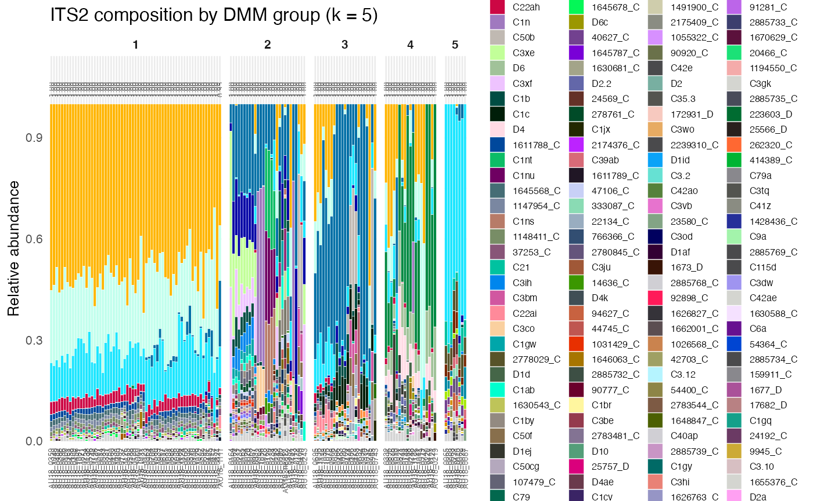
### Exemplars
plot_exemplars(spd, model = "dmm")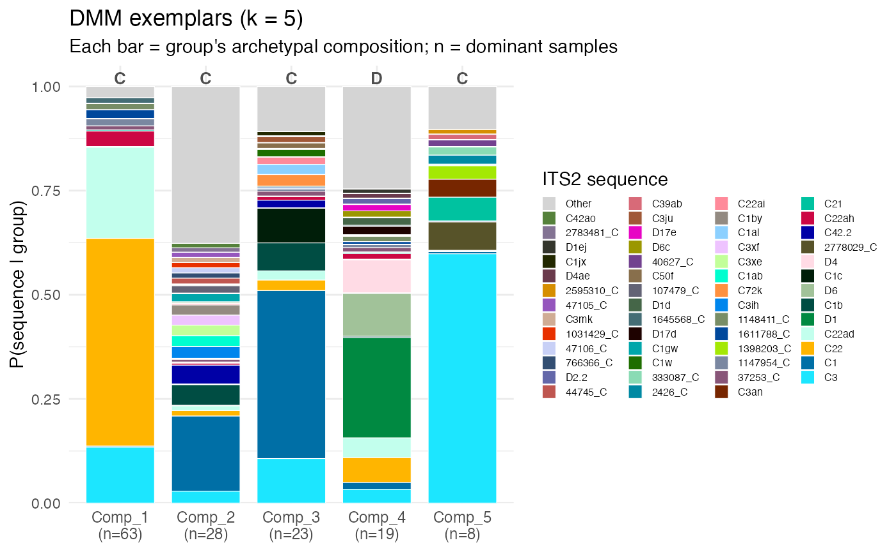
### Membership
plot_membership(spd, model = "dmm")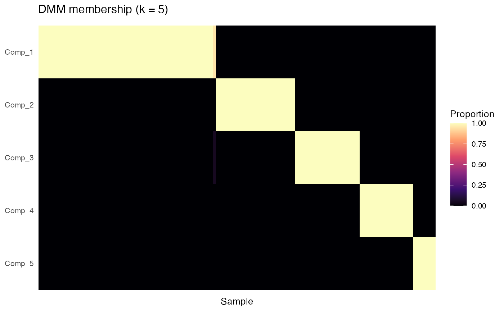
### Contingency
plot_contingency(spd, model = "dmm")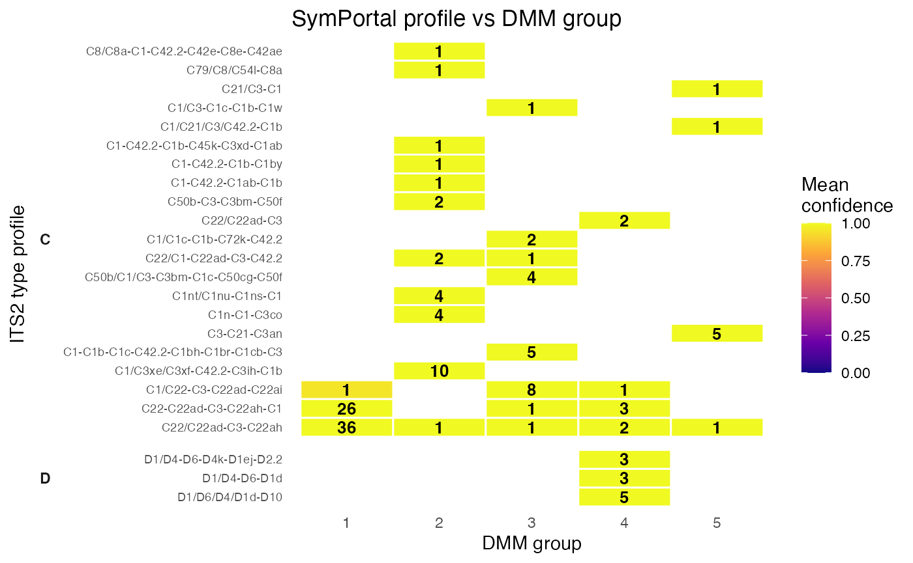
### Top Sequences
plot_top_seqs(spd, model = "dmm")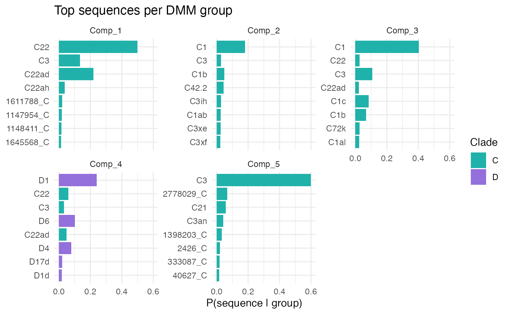
Model selection with DMM
fit_dmm() evaluates k = 1:max_k and selects
K by the Laplace approximation to the model evidence. Inspect the
criteria:
dmm_plot_selection(spd)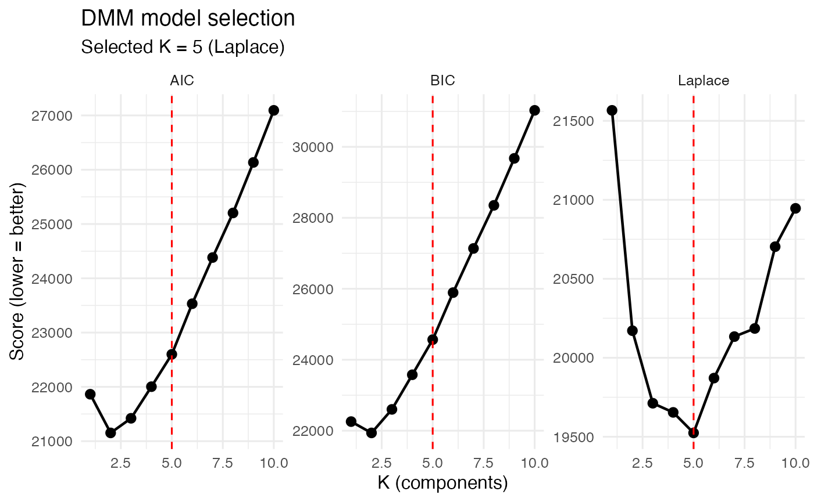
spd$dmm$meta$model_fit # the Laplace / AIC / BIC table
#> K Laplace AIC BIC
#> 1 1 21566.51 21864.44 22256.63
#> 2 2 20171.35 21152.03 21937.88
#> 3 3 19712.10 21421.32 22600.82
#> 4 4 19654.26 22003.70 23576.86
#> 5 5 19524.29 22599.95 24566.78
#> 6 6 19871.30 23531.40 25891.89
#> 7 7 20134.00 24382.39 27136.54
#> 8 8 20185.50 25203.44 28351.24
#> 9 9 20703.28 26134.21 29675.67
#> 10 10 20946.06 27093.76 31028.88Assignment and certainty
The membership object holds the posterior and per-sample certainty:
spd$dmm$k # selected number of components
#> [1] 5
head(spd$dmm$theta) # posterior membership (near one-hot)
#> Comp_1 Comp_2 Comp_3 Comp_4 Comp_5
#> 158759 1 7.537624e-12 2.412294e-13 3.150114e-12 1.422421e-39
#> 158752 1 5.660563e-30 2.863315e-30 1.021696e-30 3.798470e-73
#> 158831 1 4.659364e-35 2.324003e-35 5.578593e-33 2.669320e-78
#> 158769 1 1.898072e-30 3.397402e-31 1.954633e-28 7.553626e-71
#> 158754 1 1.045678e-32 5.430072e-32 8.371002e-32 1.319867e-77
#> 158795 1 3.887298e-31 1.493003e-32 2.270293e-26 2.488716e-61
head(spd$dmm$meta$certainty)
#> 158759 158752 158831 158769 158754 158795
#> 1 1 1 1 1 1DMM certainty is typically near 1.0 even for mixed samples: this is a property of the likelihood at amplicon read depths, not evidence of unmixed communities. The tools below probe whether that confidence is stable.
Prediction on new samples
Score new count vectors against the fitted components with no refitting (closed-form Dirichlet-Multinomial predictive):
# A hypothetical C22-dominated sample
model_seqs <- colnames(spd$count_mat)
x <- setNames(rep(0L, length(model_seqs)), model_seqs)
x[c("C22", "C3", "C1")] <- c(3000, 1500, 500)
predict_dmm(spd, x)
#> sample assigned certainty total_reads P_comp_1 P_comp_2 P_comp_3
#> 1 new_1 3 0.7609493 5000 3.289205e-41 0.2390507 0.7609493
#> P_comp_4 P_comp_5
#> 1 1.810823e-15 5.48399e-34Leave-one-out cross-validation
Refit on N-1 samples, predict the held-out one; reports concordance and flags samples that switch component (candidate boundary/mixed samples):
Subsample cross-validation
Faster alternative: repeatedly hold out a fraction and predict.
stab <- dmm_subsample_cv(spd, frac_test = 0.2, n_reps = 50)
head(stab) # least stable samples firstSimulation
Three modes probe DMM behaviour.
Blend two components across a gradient to trace the decision boundary:
blend <- dmm_simulate(spd, mode = "blend", blend_comps = c(1, 2),
blend_range = seq(0, 1, 0.05))Perturb real samples (reassign a fraction of reads) to test robustness — a predictively-neutral perturbation that flips many “certain” assignments demonstrates hard-assignment fragility:
perturb <- dmm_simulate(spd, mode = "perturb", perturb_frac = 0.10)
#> perturb accuracy: 37.0%
mean(perturb$assigned == perturb$true_comp) # accuracy under 10% noise
#> [1] 0.37From alpha draws from each component’s own Dirichlet — a self-consistency check:
dmm_simulate(spd, mode = "from_alpha", n_sim = 200)3. Latent Dirichlet allocation (LDA)
LDA treats each sample as a mixture of latent topics rather than
assigning it to a single community type. Each topic represents a
recurring community profile, and each sample is described by fractional
membership across those topics. This makes LDA useful when communities
are not cleanly separated, or when samples contain combinations of
multiple underlying assemblages. Instead of asking
“which group does this sample belong to?”, LDA asks
“what is this sample made of?”. The number of topics, K, is
usually chosen by fitting models across a range of values and selecting
a solution that balances interpretability, redundancy, and model
fit.
4-panel K diagnostics
lda_plot_ksearch(spd) 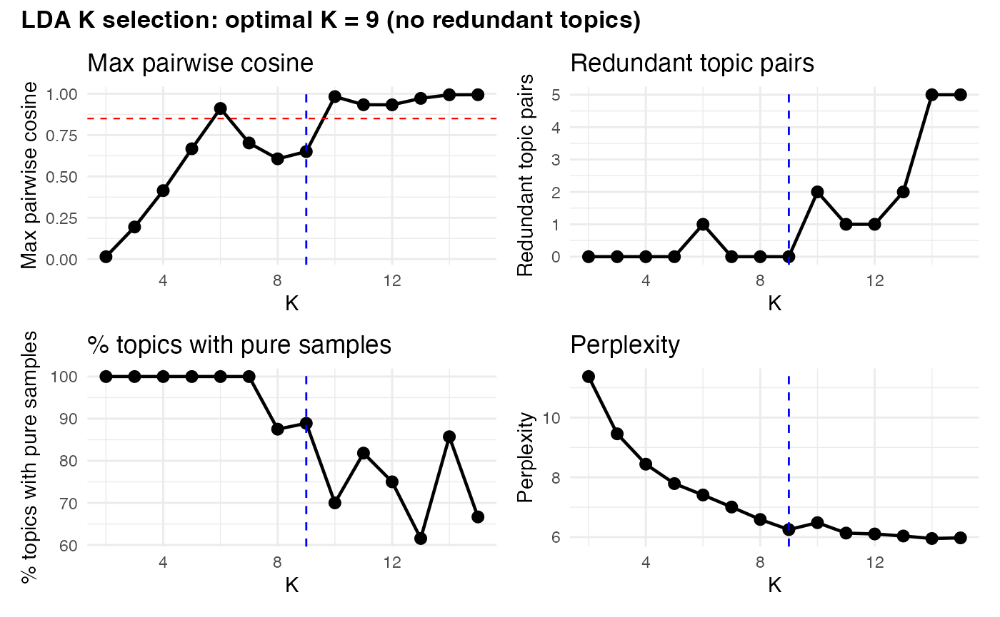
search table:
spd$lda$meta$selection
#> K max_cosine n_redundant n_pure_topics pct_pure perplexity
#> 1 2 0.01468625 0 2 100.00000 11.373098
#> 2 3 0.19417445 0 3 100.00000 9.456049
#> 3 4 0.41427442 0 4 100.00000 8.439554
#> 4 5 0.66712812 0 5 100.00000 7.789258
#> 5 6 0.91081481 1 6 100.00000 7.407763
#> 6 7 0.70227372 0 7 100.00000 7.004775
#> 7 8 0.60640804 0 7 87.50000 6.588705
#> 8 9 0.65008741 0 8 88.88889 6.249001
#> 9 10 0.98260161 2 7 70.00000 6.481119
#> 10 11 0.93331084 1 9 81.81818 6.132651
#> 11 12 0.93278374 1 9 75.00000 6.103019
#> 12 13 0.97178441 2 8 61.53846 6.034959
#> 13 14 0.99345346 5 12 85.71429 5.951224
#> 14 15 0.99372736 5 10 66.66667 5.972582Note: a topic is a recurring compositional pattern inferred from the data.
In LDA & HDP, a topic is not a fixed observed group, but a probability distribution over ITS2 profiles (i.e. a characteristic community profile, defined by high probabilities for particular ITS2 sequences or taxa).’
Topic redundancy
Topic redundancy asks whether two inferred topics are actually meaningfully different, or whether the model has split one biological/community pattern into two near-duplicate topics. A cosine-similarity matrix compares every topic against every other topic based on their feature composition, where 0 = very different and 1 = almost identical.
A pairwise similarity above about 0.85 suggests the topics may be redundant. That is, the model may have used two topics to describe what is effectively one community pattern. This is often called over-splitting.
lda_plot_similarity(spd)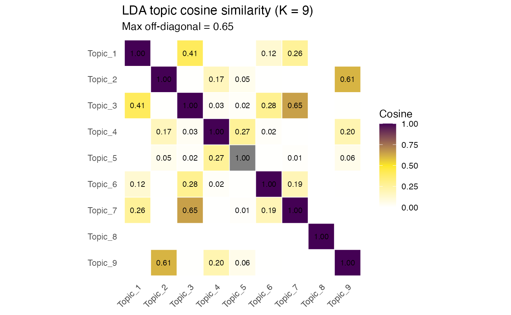
#spd$lda$meta$redundant # flagged redundant pairs (should be empty)Fractional membership
Fractional membership means each sample is represented as a mixture of topics rather than being assigned to only one topic.
Instead of saying:
sample A belongs to topic 2
LDA says something more like:
sample A is 70% topic 2, 20% topic 5, and 10% topic 1
These topic proportions sum to 1 for each sample. This is useful when samples contain mixed communities, transitional states, or multiple co-occurring assemblages.
The dominant topic is the topic with the largest proportion in a sample. For example, if a sample is 80% topic 4, then topic 4 is its dominant topic.
The maximum topic proportion describes how strongly a sample is dominated by one topic. A value near 1 means the sample is nearly pure. A lower value means the sample is more mixed.
The number of topics above 5% gives a simple count of how many topics meaningfully contribute to a sample. If a sample has more than one topic above 5%, it can be treated as a mixed sample.
The entropy summarises how evenly spread the sample is across topics. Low entropy means one topic dominates. High entropy means the sample is distributed across several topics. In ecological terms, entropy is a compact measure of how mixed or compositionally ambiguous a sample is.
#spd$lda$k
#head(spd$lda$theta) # rows sum to 1, values fractional
head(spd$metadata[, c("lda_dominant", "lda_entropy",
"lda_max_prop", "lda_n_topics")])
#> lda_dominant lda_entropy lda_max_prop lda_n_topics
#> 158759 2 1.0055263 0.7789803 2
#> 158752 9 0.8246483 0.7783756 2
#> 158831 9 0.9240992 0.7154954 2
#> 158769 9 1.0035484 0.6740292 2
#> 158754 9 0.8160887 0.7814645 2
#> 158795 9 0.8311599 0.8201232 2lda_n_topics counts topics above 5% per sample;
> 1 marks a mixed sample. lda_entropy
(bits) summarises mixing.
Topic summary
lda_topic_summary() produces a report cross-referencing
each topic to clade, host species, SymPortal profiles, and its exemplar
composition:
lda_topic_summary(spd, top_n = 9)
#> LDA topic exemplars (K = 9)
#>
#> Topic 1 [Clade C] - 6 samples (entropy 0.52, purity 0.92)
#> top profiles: C1n-C1-C3co:4, C79/C8/C54l-C8a:1, C8/C8a-C1-C42.2-C42e-C8e-C42ae:1
#> C1n [C] 52.0%
#> C1 [C] 24.1%
#> C3co [C] 11.2%
#> 90777_C [C] 2.2%
#> 2853_C [C] 1.5%
#> 123623_C [C] 1.5%
#> 92898_C [C] 1.1%
#> 2885739_C [C] 1.0%
#> C1b [C] 0.9%
#>
#> Topic 2 [Clade C] - 4 samples (entropy 0.82, purity 0.79)
#> top profiles: C22/C22ad-C3:2, C22/C22ad-C3-C22ah:2
#> C22ad [C] 55.1%
#> C22 [C] 27.6%
#> C3 [C] 10.9%
#> 37253_C [C] 3.4%
#> 1670084_C [C] 0.5%
#> 1622915_C [C] 0.5%
#> 1646070_C [C] 0.3%
#> 1148411_C [C] 0.3%
#> 1646063_C [C] 0.3%
#>
#> Topic 3 [Clade C] - 16 samples (entropy 0.94, purity 0.76)
#> top profiles: C1/C22-C3-C22ad-C22ai:7, C1-C1b-C1c-C42.2-C1bh-C1br-C1cb-C3:5, C1/C1c-C1b-C72k-C42.2:2
#> C1 [C] 73.2%
#> C1c [C] 6.9%
#> C1b [C] 4.3%
#> C22ai [C] 3.5%
#> C3 [C] 2.3%
#> C42.2 [C] 1.6%
#> C72k [C] 1.5%
#> C1al [C] 1.1%
#> C1w [C] 0.9%
#>
#> Topic 4 [Clade C] - 9 samples (entropy 0.66, purity 0.88)
#> top profiles: C3-C21-C3an:5, C1/C21/C3/C42.2-C1b:1, C21/C3-C1:1
#> C3 [C] 68.5%
#> C21 [C] 5.3%
#> 2778029_C [C] 4.0%
#> C3n [C] 3.3%
#> C3an [C] 2.0%
#> 40627_C [C] 1.8%
#> 2426_C [C] 1.5%
#> 1398203_C [C] 1.5%
#> 333087_C [C] 1.0%
#>
#> Topic 5 [Clade C] - 6 samples (entropy 0.90, purity 0.79)
#> top profiles: C50b/C1/C3-C3bm-C1c-C50cg-C50f:4, C50b-C3-C3bm-C50f:2
#> C50b [C] 41.4%
#> C3 [C] 12.4%
#> C3bm [C] 11.3%
#> C50f [C] 7.2%
#> C50cg [C] 6.5%
#> C1c [C] 3.8%
#> 1645787_C [C] 3.3%
#> 22134_C [C] 2.2%
#> 1680592_C [C] 1.5%
#>
#> Topic 6 [Clade C] - 4 samples (entropy 0.46, purity 0.91)
#> top profiles: C1nt/C1nu-C1ns-C1:4
#> C1nu [C] 25.9%
#> C1nt [C] 24.4%
#> C1ns [C] 21.0%
#> C1 [C] 12.4%
#> 14636_C [C] 4.2%
#> 1055322_C [C] 2.8%
#> C3ih [C] 1.7%
#> 262320_C [C] 1.3%
#> C3hi [C] 1.0%
#>
#> Topic 7 [Clade C] - 15 samples (entropy 0.73, purity 0.85)
#> top profiles: C1/C3xe/C3xf-C42.2-C3ih-C1b:10, C1-C42.2-C1ab-C1b:1, C1-C42.2-C1b-C1by:1
#> C1 [C] 21.6%
#> C3xe [C] 16.6%
#> C42.2 [C] 13.9%
#> C3xf [C] 11.4%
#> C1b [C] 4.5%
#> C3ih [C] 3.6%
#> C1gw [C] 3.5%
#> 107479_C [C] 3.0%
#> C1by [C] 2.9%
#>
#> Topic 8 [Clade D] - 14 samples (entropy 1.05, purity 0.71)
#> top profiles: D1/D6/D4/D1d-D10:5, D1/D4-D6-D1d:3, D1/D4-D6-D4k-D1ej-D2.2:3
#> D1 [D] 50.8%
#> D6 [D] 13.5%
#> D4 [D] 11.2%
#> D1d [D] 4.1%
#> D1ej [D] 3.9%
#> D2.2 [D] 1.5%
#> D6c [D] 1.2%
#> D10 [D] 1.2%
#> D4k [D] 1.0%
#>
#> Topic 9 [Clade C] - 67 samples (entropy 1.07, purity 0.70)
#> top profiles: C22/C22ad-C3-C22ah:34, C22-C22ad-C3-C22ah-C1:29, C1/C22-C3-C22ad-C22ai:3
#> C22 [C] 61.0%
#> C3 [C] 13.0%
#> C22ad [C] 10.9%
#> C22ah [C] 4.6%
#> 1611788_C [C] 2.3%
#> 1645568_C [C] 1.8%
#> 1147954_C [C] 1.7%
#> 1148411_C [C] 1.4%
#> 1630543_C [C] 0.8%Interpreting exemplar overlap
Two topics sharing a sequence backbone are not necessarily redundant.
Use the cosine matrix (redundancy), per-sample theta
(mixing), and pure-sample counts together — a multi-coloured exemplar
can reflect real intragenomic variation within one community type rather
than mixing. See
plot_exemplars(spd, model = "lda")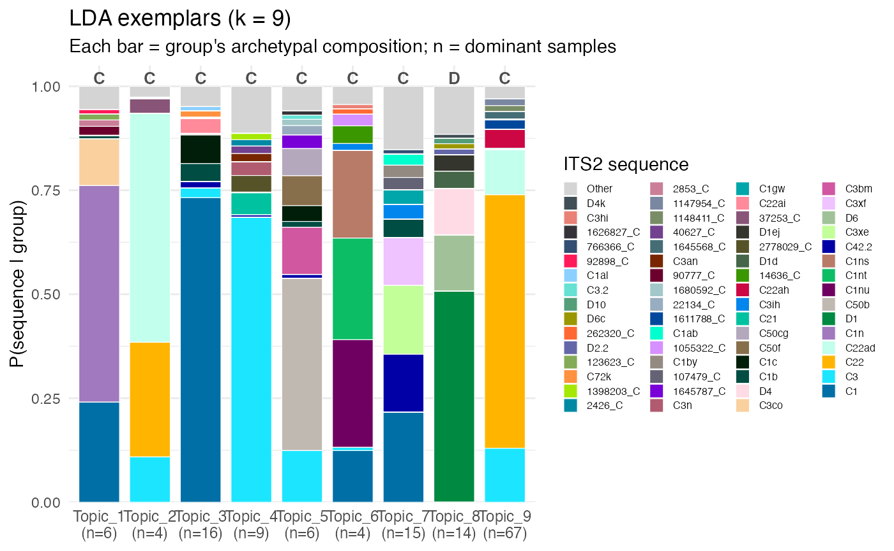
and
plot_membership(spd, model = "lda")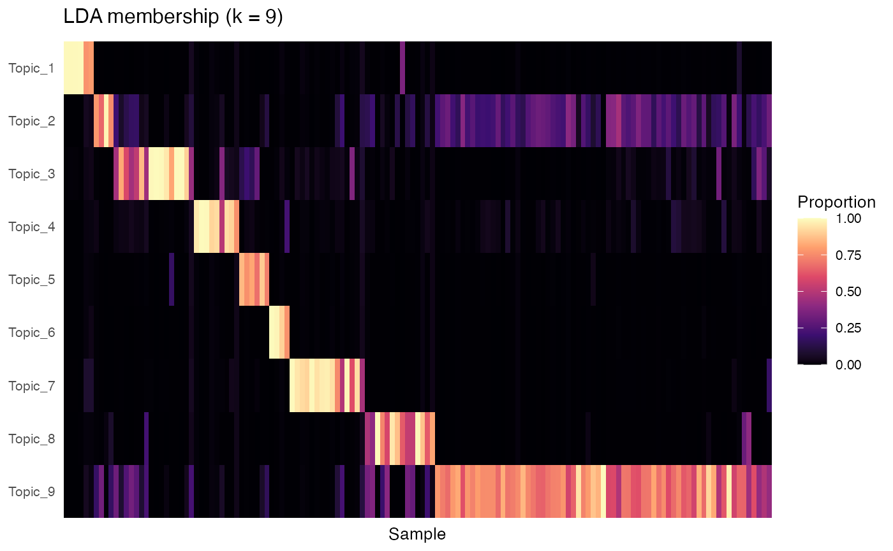
plot_barplot(spd, model = "lda")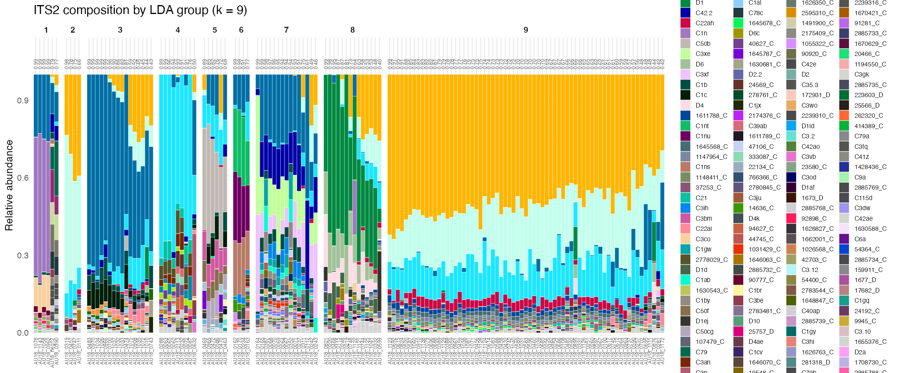
plot_admixtures(spd)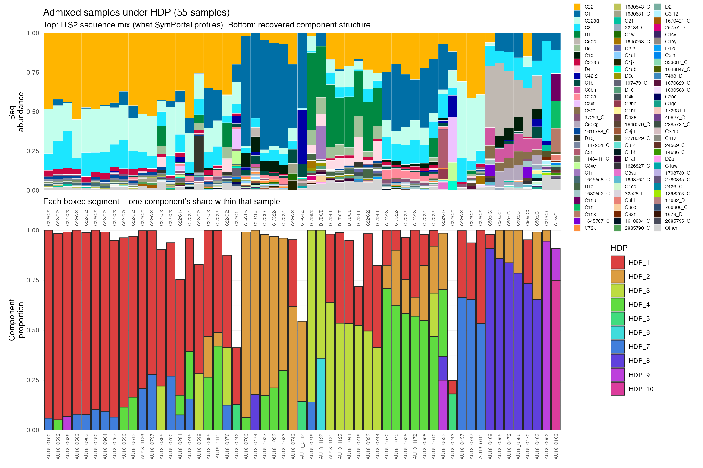
3. Hierarchical Dirichlet Process
The HDP is the threshold-free, mixture-aware core of
symbayes. The number of community types is inferred
from the data, not specified, and samples may be admixed. It
requires the hdp package:
# devtools::install_github("NickWilliamsSanger/hdp", build_vignettes = FALSE)In HDP, the model is fit by Gibbs sampling: rather than returning a single answer, the sampler takes hundreds of draws from the posterior distribution — each draw is one plausible clustering of the data given the model and priors. The blue histogram shows, across those posterior draws, how many raw clusters the sampler was using at each draw: it ranged 13–17, median 14. That spread is the posterior over cluster number — the model isn’t committing to one value, it’s expressing that ~14 clusters explains the data well, give or take. Crucially, these raw clusters are per-draw and not aligned across draws: cluster 5 in draw 100 need not be cluster 5 in draw 200. So the raw count isn’t directly usable as “the components.”
the fit_hdp() funbction thentakes all the posterior
draws, matches up clusters that recur across them by cosine similarity
(merging those above cos_merge = 0.90), and keeps only components that
appear reproducibly across draws — discarding transient clusters that
flickered in and out of individual draws without being stable features.
The 14 raw → 10 extracted drop is exactly this: four of the raw clusters
weren’t reproducible enough (or were near-duplicates merged into
others), leaving 10 stable components. “Inferred, not fixed” means the
count came from the data’s posterior rather than being specified, and
“extracted” is the reproducible subset of that posterior you can
actually name and interpret. The red line at 10 sitting left of the blue
mass is expected and correct — extraction is meant to consolidate, not
preserve the raw count.
hdp_plot_numcomp(spd) # inferred number of components
#> Warning: Removed 2 rows containing missing values or values outside the scale range
#> (`geom_bar()`).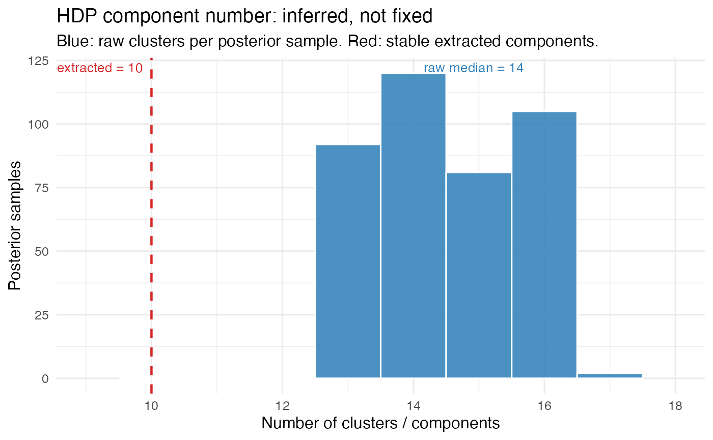
Overclassification
res <- hdp_vs_symportal(spd, over_split_min_frac = 0.7, mixture_thresh = 0.7)
#> SymPortal over-classification vs HDP
#> SymPortal profiles: 34
#> HDP components: 10
#> Ratio: 3.4x
#>
#> Over-splitting (confident): 5 HDP components absorb >1 profile
#> HDP_1 <- 2 profiles: C22/C22ad-C3-C22ah, C22-C22ad-C3-C22ah-C1
#> HDP_2 <- 3 profiles: C1-C1b-C1c-C42.2-C1bh-C1br-C1cb-C3, C1/C1c-C1b-C72k-C42.2, C1/C3-C1c-C1b-C1w
#> HDP_3 <- 2 profiles: D1/D6/D4/D1d-D10, D1/D4-D6-D1d
#> HDP_8 <- 2 profiles: C50b/C1/C3-C3bm-C1c-C50cg-C50f, C50b-C3-C3bm-C50f
#> HDP_9 <- 3 profiles: C3-C21-C3an, C21/C3-C1, C1/C21/C3/C42.2-C1b
#>
#> Mixture-as-taxa profiles (<70% one comp): 8
#> Orphan profiles (excluded from over-split count): 0Mixtures
Focus on the mixture profiles:
res$mixture_profiles # profiles that are HDP admixtures
#> sp_profile n_samples dominant_hdp dominant_frac
#> 314241 C1/C22-C3-C22ad-C22ai 10 4 0.46729429
#> 313716 C22/C1-C22ad-C3-C42.2 3 1 0.28995773
#> 314184 C79/C8/C54l-C8a 1 1 0.04923822
#> 313731 C1-C42.2-C1ab-C1b 1 5 0.24997918
#> 313247 C8/C8a-C1-C42.2-C42e-C8e-C42ae 1 2 0.02271510
#> 314185 C1-C42.2-C1b-C45k-C3xd-C1ab 1 2 0.40068170
#> 313342 C1-C42.2-C1b-C1by 1 5 0.24993197
#> 314912 D1/D4-D6-D4k-D1ej-D2.2 3 3 0.54670293
#> hdp_entropy is_mixture confident_assign
#> 314241 1.7429643 TRUE FALSE
#> 313716 2.1556868 TRUE FALSE
#> 314184 0.3923394 TRUE FALSE
#> 313731 0.5007267 TRUE FALSE
#> 313247 0.2648668 TRUE FALSE
#> 314185 0.9310338 TRUE FALSE
#> 313342 0.5023958 TRUE FALSE
#> 314912 1.0820993 TRUE FALSE
matching hdp topics to symportal Majority ITS2 sequences
Cosine similarity measures the angle between two vectors, ignoring their magnitude — it asks “do these point in the same direction?” not “are they the same size?”
match_profiles(spd, model = "hdp") |>
kable(
format = "html",
digits = 2,
) |>
kable_styling(full_width = FALSE)| group | topic_name | rank | sp_profile | cosine |
|---|---|---|---|---|
| HDP_1 | C22-C22ad-C3 | 1 | C22/C22ad-C3-C22ah | 1.00 |
| HDP_1 | C22-C22ad-C3 | 2 | C22-C22ad-C3-C22ah-C1 | 1.00 |
| HDP_1 | C22-C22ad-C3 | 3 | C22/C22ad-C3 | 0.80 |
| HDP_2 | C1-C1c | 1 | C1/C1c-C1b-C72k-C42.2 | 1.00 |
| HDP_2 | C1-C1c | 2 | C1-C1b-C1c-C42.2-C1bh-C1br-C1cb-C3 | 1.00 |
| HDP_2 | C1-C1c | 3 | C1/C3-C1c-C1b-C1w | 1.00 |
| HDP_3 | D1-D6-D4 | 1 | D1/D4-D6-D1d | 0.99 |
| HDP_3 | D1-D6-D4 | 2 | D1/D6/D4/D1d-D10 | 0.96 |
| HDP_3 | D1-D6-D4 | 3 | D1/D4-D6-D4k-D1ej-D2.2 | 0.87 |
| HDP_4 | C1/C22/C3-C3n-C22ad | 1 | C1/C22-C3-C22ad-C22ai | 0.96 |
| HDP_4 | C1/C22/C3-C3n-C22ad | 2 | C22/C1-C22ad-C3-C42.2 | 0.92 |
| HDP_4 | C1/C22/C3-C3n-C22ad | 3 | C1/C3-C1c-C1b-C1w | 0.77 |
| HDP_5 | C1/C3xe/C42.2/C3xf | 1 | C1/C3xe/C3xf-C42.2-C3ih-C1b | 1.00 |
| HDP_5 | C1/C3xe/C42.2/C3xf | 2 | C1-C42.2-C1b-C45k-C3xd-C1ab | 0.74 |
| HDP_5 | C1/C3xe/C42.2/C3xf | 3 | C1-C42.2-C1ab-C1b | 0.68 |
| HDP_6 | C1n-C1-C3co | 1 | C1n-C1-C3co | 1.00 |
| HDP_6 | C1n-C1-C3co | 2 | C1/C1c-C1b-C72k-C42.2 | 0.40 |
| HDP_6 | C1n-C1-C3co | 3 | C1/C3-C1c-C1b-C1w | 0.40 |
| HDP_7 | C22ad-C22-C3 | 1 | C22/C22ad-C3 | 0.98 |
| HDP_7 | C22ad-C22-C3 | 2 | C22-C22ad-C3-C22ah-C1 | 0.72 |
| HDP_7 | C22ad-C22-C3 | 3 | C22/C22ad-C3-C22ah | 0.71 |
| HDP_8 | C50b-C3-C3bm-C50f-C50cg | 1 | C50b-C3-C3bm-C50f | 0.94 |
| HDP_8 | C50b-C3-C3bm-C50f-C50cg | 2 | C50b/C1/C3-C3bm-C1c-C50cg-C50f | 0.92 |
| HDP_8 | C50b-C3-C3bm-C50f-C50cg | 3 | C21/C3-C1 | 0.29 |
| HDP_9 | C3-2778029_C | 1 | C3-C21-C3an | 1.00 |
| HDP_9 | C3-2778029_C | 2 | C21/C3-C1 | 1.00 |
| HDP_9 | C3-2778029_C | 3 | C1/C21/C3/C42.2-C1b | 0.99 |
| HDP_10 | C1nu/C1nt/C1ns-C1 | 1 | C1nt/C1nu-C1ns-C1 | 0.99 |
| HDP_10 | C1nu/C1nt/C1ns-C1 | 2 | C1/C3-C1c-C1b-C1w | 0.28 |
| HDP_10 | C1nu/C1nt/C1ns-C1 | 3 | C1/C1c-C1b-C72k-C42.2 | 0.28 |
4. Compare fits
4a) LDA
lda v symportal
plot_symportal_comparison(spd, model="lda", screen = TRUE, use_names = TRUE)
#> Overdispersion test (LDA), real read counts: 8 pairs tested
#> mixing (rho >= 0.05): 7
#> ambiguous (0.01 < rho < 0.05): 1
#> intragenomic (rho <= 0.01): 0
#> rho = beta-binomial overdispersion (0 = fixed ratio; higher = mixing).
#> psbA (single-copy) remains the definitive arbiter.
#> Topic pair comparison (LDA): 36 pairs
#> redundant 0
#> intragenomic 1
#> mixing 7
#> ambiguous 0
#> distinct 28
#> (psbA remains the definitive arbiter for intragenomic vs mixing)
#>
#> Intragenomic screen (LDA):
#> 9 topics -> 8 suggested biological units (1 multi-topic groups)
#> 3 sample(s) deviate from their group's fixed ratio (flagged)
#> Suggestion only; theta unchanged. Use merge_topics() to apply a grouping.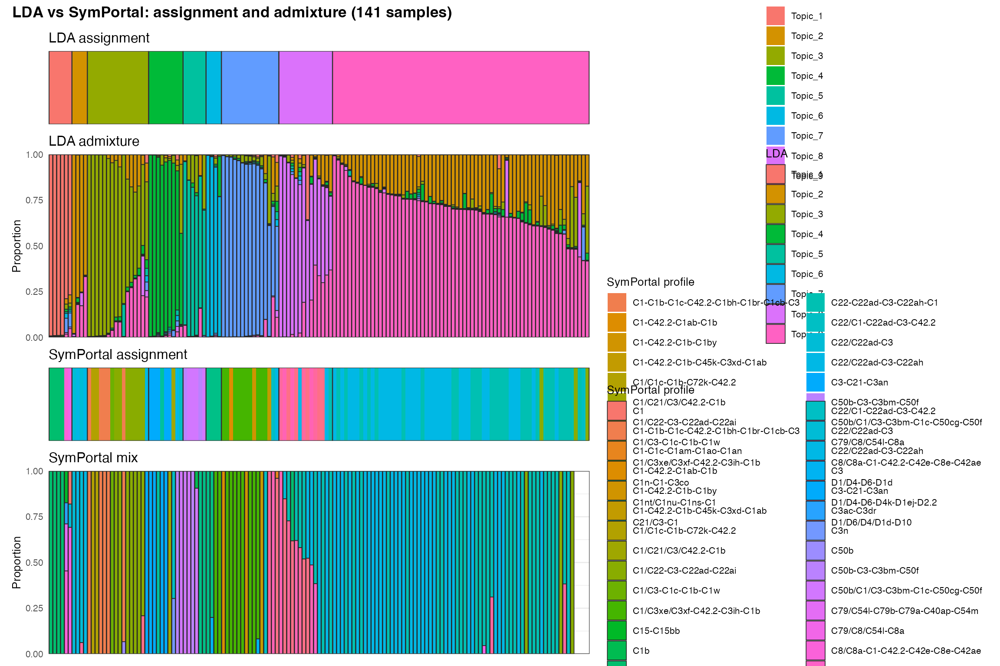
matching lda topics to symportal Majority ITS2 sequences
Cosine similarity measures the angle between two vectors, ignoring their magnitude — it asks “do these point in the same direction?” not “are they the same size?”
match_profiles(spd, model = "lda") |>
kable(
format = "html",
digits = 2,
) |>
kable_styling(full_width = FALSE)| group | topic_name | rank | sp_profile | cosine |
|---|---|---|---|---|
| Topic_1 | C1n-C1-C3co | 1 | C1n-C1-C3co | 1.00 |
| Topic_1 | C1n-C1-C3co | 2 | C1/C1c-C1b-C72k-C42.2 | 0.41 |
| Topic_1 | C1n-C1-C3co | 3 | C1/C3-C1c-C1b-C1w | 0.41 |
| Topic_2 | C22ad/C22-C3 | 1 | C22/C22ad-C3 | 0.99 |
| Topic_2 | C22ad/C22-C3 | 2 | C22-C22ad-C3-C22ah-C1 | 0.78 |
| Topic_2 | C22ad/C22-C3 | 3 | C22/C22ad-C3-C22ah | 0.77 |
| Topic_3 | C1-C1c | 1 | C1/C1c-C1b-C72k-C42.2 | 1.00 |
| Topic_3 | C1-C1c | 2 | C1-C1b-C1c-C42.2-C1bh-C1br-C1cb-C3 | 1.00 |
| Topic_3 | C1-C1c | 3 | C1/C3-C1c-C1b-C1w | 1.00 |
| Topic_4 | C3-C21 | 1 | C3-C21-C3an | 1.00 |
| Topic_4 | C3-C21 | 2 | C21/C3-C1 | 0.99 |
| Topic_4 | C3-C21 | 3 | C1/C21/C3/C42.2-C1b | 0.99 |
| Topic_5 | C50b-C3-C3bm-C50f-C50cg | 1 | C50b-C3-C3bm-C50f | 0.94 |
| Topic_5 | C50b-C3-C3bm-C50f-C50cg | 2 | C50b/C1/C3-C3bm-C1c-C50cg-C50f | 0.92 |
| Topic_5 | C50b-C3-C3bm-C50f-C50cg | 3 | C21/C3-C1 | 0.27 |
| Topic_6 | C1nu/C1nt/C1ns-C1 | 1 | C1nt/C1nu-C1ns-C1 | 0.99 |
| Topic_6 | C1nu/C1nt/C1ns-C1 | 2 | C1/C3-C1c-C1b-C1w | 0.28 |
| Topic_6 | C1nu/C1nt/C1ns-C1 | 3 | C1/C1c-C1b-C72k-C42.2 | 0.28 |
| Topic_7 | C1/C3xe/C42.2/C3xf | 1 | C1/C3xe/C3xf-C42.2-C3ih-C1b | 1.00 |
| Topic_7 | C1/C3xe/C42.2/C3xf | 2 | C1-C42.2-C1b-C45k-C3xd-C1ab | 0.78 |
| Topic_7 | C1/C3xe/C42.2/C3xf | 3 | C1-C42.2-C1ab-C1b | 0.73 |
| Topic_8 | D1-D6-D4 | 1 | D1/D4-D6-D1d | 0.98 |
| Topic_8 | D1-D6-D4 | 2 | D1/D6/D4/D1d-D10 | 0.95 |
| Topic_8 | D1-D6-D4 | 3 | D1/D4-D6-D4k-D1ej-D2.2 | 0.88 |
| Topic_9 | C22-C3-C22ad | 1 | C22/C22ad-C3-C22ah | 0.97 |
| Topic_9 | C22-C3-C22ad | 2 | C22-C22ad-C3-C22ah-C1 | 0.97 |
| Topic_9 | C22-C3-C22ad | 3 | C22/C1-C22ad-C3-C42.2 | 0.74 |
4b) hdp v symportal
plot_symportal_comparison(spd, model="lda", screen = TRUE, use_names = TRUE)
#> Overdispersion test (LDA), real read counts: 8 pairs tested
#> mixing (rho >= 0.05): 7
#> ambiguous (0.01 < rho < 0.05): 1
#> intragenomic (rho <= 0.01): 0
#> rho = beta-binomial overdispersion (0 = fixed ratio; higher = mixing).
#> psbA (single-copy) remains the definitive arbiter.
#> Topic pair comparison (LDA): 36 pairs
#> redundant 0
#> intragenomic 1
#> mixing 7
#> ambiguous 0
#> distinct 28
#> (psbA remains the definitive arbiter for intragenomic vs mixing)
#>
#> Intragenomic screen (LDA):
#> 9 topics -> 8 suggested biological units (1 multi-topic groups)
#> 3 sample(s) deviate from their group's fixed ratio (flagged)
#> Suggestion only; theta unchanged. Use merge_topics() to apply a grouping.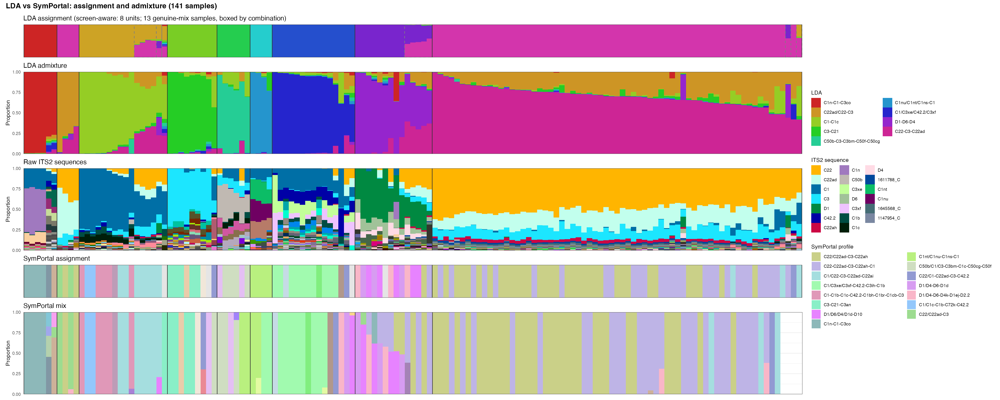